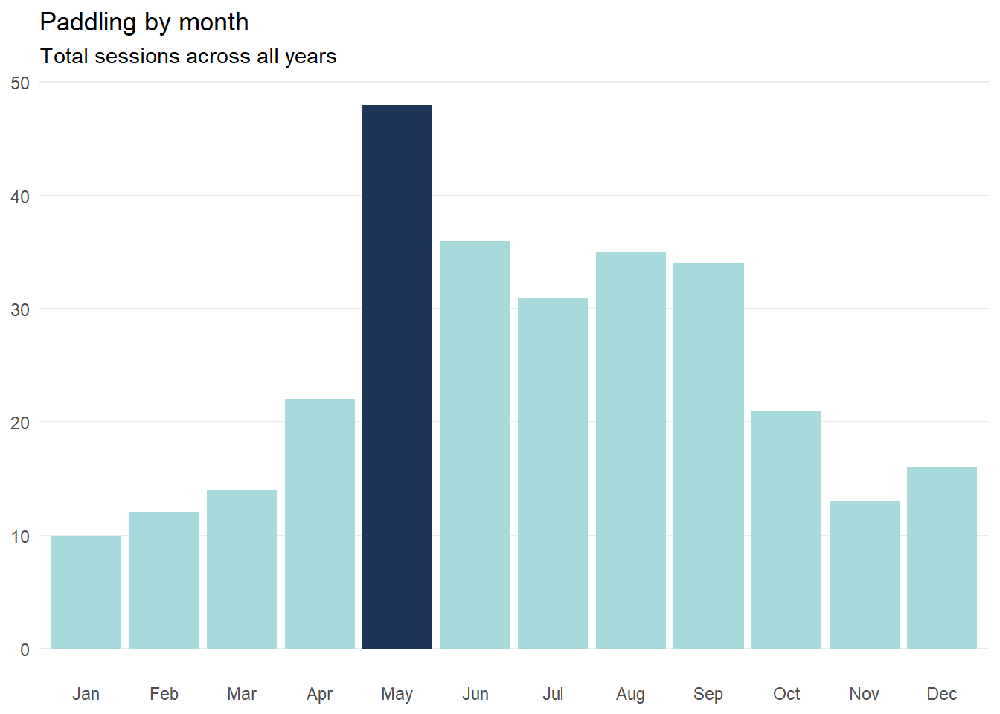
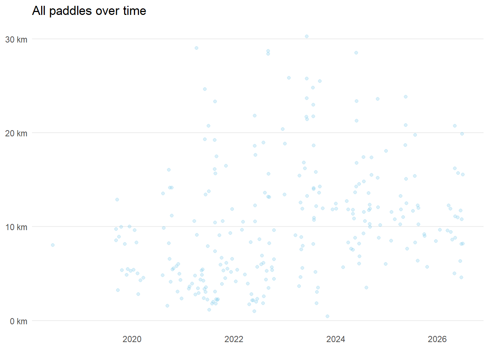
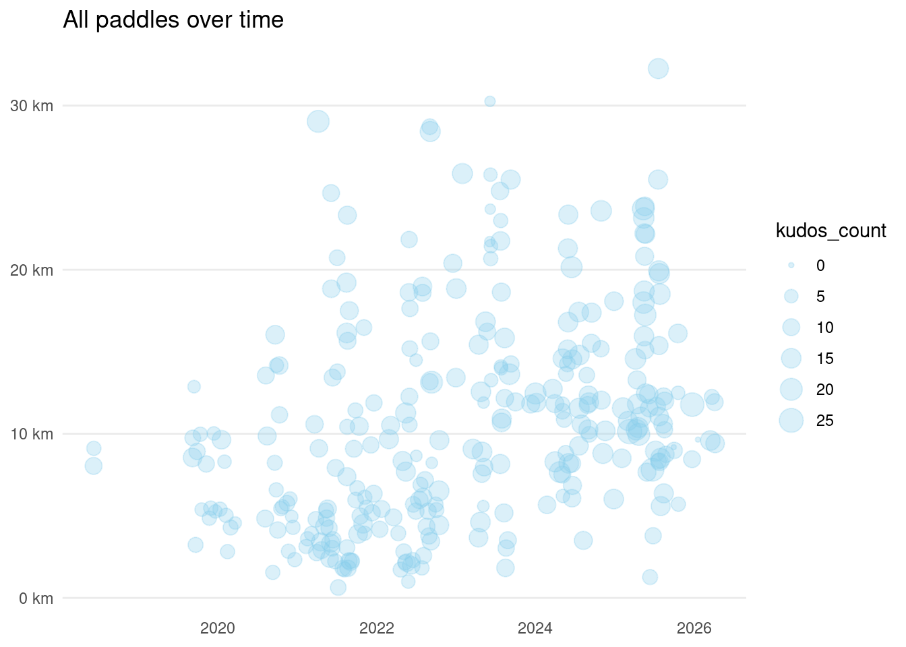

Total Paddles
296
Distance paddled
3158 km
Time on the water
621 hours
Longest Paddle
32.3km
Around Ardnamurchan point
Most Kudos
26 kudos
Surrounded by seals
Years Paddling
9
2018 – 2026
Data and graphs
Total Paddles
296
Distance paddled
Time on the water
Longest Paddle
32.3km
Around Ardnamurchan point
Most Kudos
26 kudos
Surrounded by seals
Years Paddling
9
2018 – 2026


